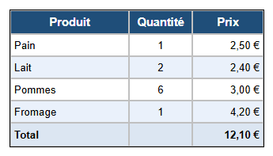

Parcours d'apprentissage › Leçon 2
Mettre en forme les cellules

D'abord sélectionner, ensuite mettre en forme
Les boutons de l'onglet  Cellule (C) agissent sur les
cellules sélectionnées :
Cellule (C) agissent sur les
cellules sélectionnées :
- cliquez sur une cellule ;
- faites glisser la souris sur plusieurs cellules ;
- cliquez sur un en-tête de ligne (1, 2, 3 ...) ou de colonne (A, B, C ...) pour une ligne ou une colonne entière.
À vous de jouer
- Ouvrez votre liste de courses de la leçon 1 (ou l'exemple de la leçon 1).
- L'en-tête : cliquez sur l'en-tête de ligne 1. Cliquez sur Gras et Centrer, choisissez le bleu foncé comme Couleur de la cellule, le blanc comme Couleur du texte et réglez la Taille de police sur 11.
- Quantité : cliquez sur l'en-tête de colonne B puis sur Centrer.
- Prix : cliquez sur l'en-tête de colonne C puis sur Aligner à droite. Les montants sont ainsi bien alignés.
- Lignes alternées : donnez aux lignes 3 et 5 une couleur de cellule bleu clair. Une longue liste se lit ainsi beaucoup plus facilement.
- Total : ajoutez une ligne avec AR (onglet Tableau), tapez Total et le montant, et mettez la ligne en gras.
Pourquoi aligner ?
On lit un texte de gauche à droite : alignez-le donc à gauche. Les nombres et les montants se comparent mieux quand les chiffres sont les uns sous les autres : alignez-les à droite. Les valeurs courtes, comme une quantité, peuvent être centrées.
Exercice
Donnez à la ligne Total une couleur de cellule jaune clair et mettez le montant total en rouge. Mettez ensuite le nom Fromage en italique, parce qu'il n'est pas encore acheté.
Solution
Cliquez sur l'en-tête de la ligne Total et choisissez le jaune clair comme Couleur de la cellule. Cliquez ensuite uniquement sur la cellule du montant et choisissez le rouge comme Couleur du texte. Cliquez sur la cellule Fromage puis sur Italique.
Vous travaillez sous Linux ? Ouvrez alors l'exemple vous-même avec Ouvrir le concepteur de tableau : dossier
lessen/fr, fichier les02-opmaak.htd.